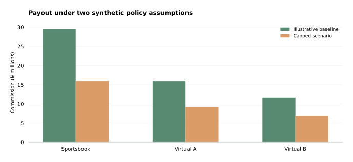

01 / Business question
Which illustrative commission structure better protects contribution margin without ignoring incentive trade-offs?
A model of the financial trade-off between volume-linked incentives and contribution margin protection across agent-product combinations.
02 / Analytical approach
- Create a panel of 80 synthetic agents across nine months.
- Define an illustrative stake-linked commission baseline and separate positive-GGR scenario.
- Apply an explicit cap to protect commission cost in negative or low-margin periods.
- Compare cost, payout/GGR ratios, negative-margin months and product results.
03 / Results from generated data
The policy scenario reduces simulated commission from ₦57.05m to ₦32.01m. The payout-to-positive-GGR ratio changes from 49.3% to 27.7%. Negative-margin agent-months change from 240 to 135. These are scenario effects, not a prediction of agent behaviour.

04 / Recommended actions
- Test agent retention and sales response before implementing a cap.
- Define exceptions and a transparent appeal path for affected agents.
- Review aggregate ratios and negative-margin cases together.
05 / Limitations
Both policies are invented, not employer rules. A lower calculated payout does not establish higher realised EBITDA or prove behavioural impact.